Aşağıdaki assetler topdown 2D roguelite oyunumuzun derinlik ve oda makyajı sistemleri için üretilmiştir. Magenta arka plandan temizlenip hedeflenen piksel boyutlarına nearest-neighbor downscale edilmiştir. Gösterim 2× piksel ölçeğindedir.
QC 2026-06-07 (Sonnet): Defringe geçişi (2820 fringe piksel, 20 dosya). 3 regen: ground_decal_combat_scratches + ground_decal_portal_scorch + hole_rim_glow (ax imagegen, 1 deneme her biri). Tüm 24 dosya Read ile GÖZLE doğrulandı.
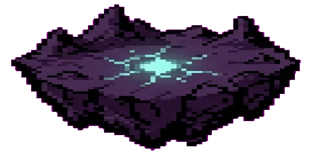
uzak yüzen ada silüeti 01 (distant_island_silhouette_01.png - 640x320)PASS
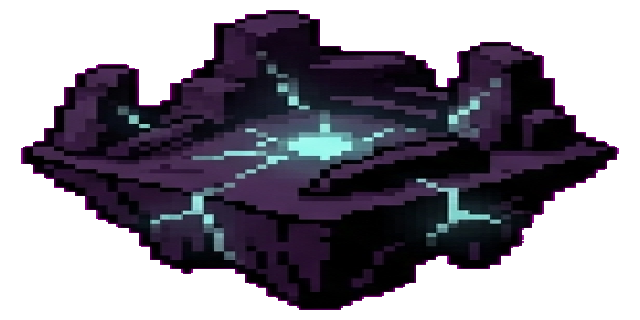
uzak yüzen ada silüeti 02 (distant_island_silhouette_02.png - 640x320)PASS
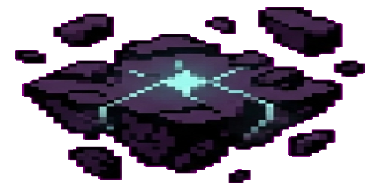
uzak yüzen ada silüeti 03 (distant_island_silhouette_03.png - 640x320)PASS
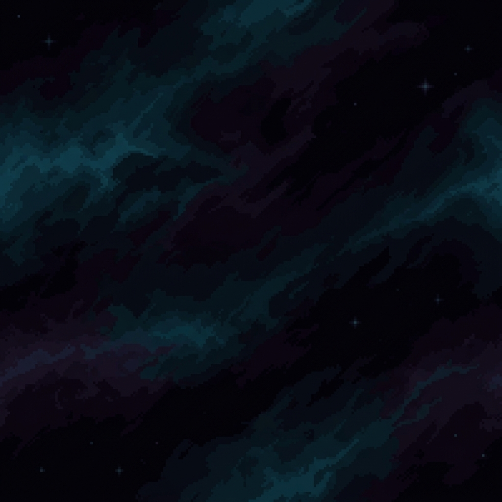
void sisi/nebula dokusu (void_nebula_sheet.png - 1024x1024)PASS
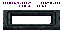
iç-delik düz kenar decal (hole_rim_straight.png - 64x32)PASS
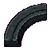
iç-delik köşe kenar decal (hole_rim_corner.png - 64x64)PASS
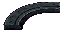
iç-delik kırık kenar decal (hole_rim_cracked.png - 64x32)PASS
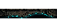
iç-delik cyan parlayan kenar decal (hole_rim_glow.png - 64x32)PASS
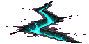
ince cyan yer çatlağı (ground_decal_thin_cyan_crack.png - 128x64)PASS
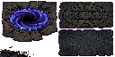
dairesel rift çatlak izi (ground_decal_circular_rift_scar.png - 128x64)PASS
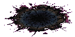
kırık ritüel çizgisi (ground_decal_ritual_line_broken.png - 128x64)PASS
çatışma sıyrık izleri (ground_decal_combat_scratches.png - 64x32)PASS
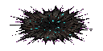
portal yanık izi (ground_decal_portal_scorch.png - 128x64)PASS
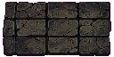
soluk rünlü zemin karoları (ground_decal_faded_rune_tiles.png - 128x64)PASS
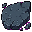
kırık taş parçası (edge_filler_broken_stone_chunk.png - 32x32)PASS
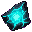
parlayan rift şardı (edge_filler_rift_shard.png - 32x32)PASS
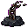
zincir kalıntısı (edge_filler_chain_stump.png - 32x32)PASS
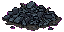
moloz yığını (edge_filler_rubble_pile.png - 64x32)PASS
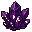
ufak void kristali (edge_filler_void_crystal_nub.png - 32x32)PASS
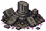
sunak kalıntısı (edge_filler_altar_debris.png - 96x64)PASS
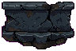
alçak korkuluk segmenti 01 (parapet_low_segment_01.png - 96x64)PASS
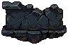
alçak korkuluk segmenti 02 (parapet_low_segment_02.png - 96x64)PASS
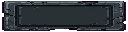
portal taş plaket frame'i (portal_label_plaque.png - 128x32)PASS
spawn varış halkası (arrival_ring.png - 96x96)PASS